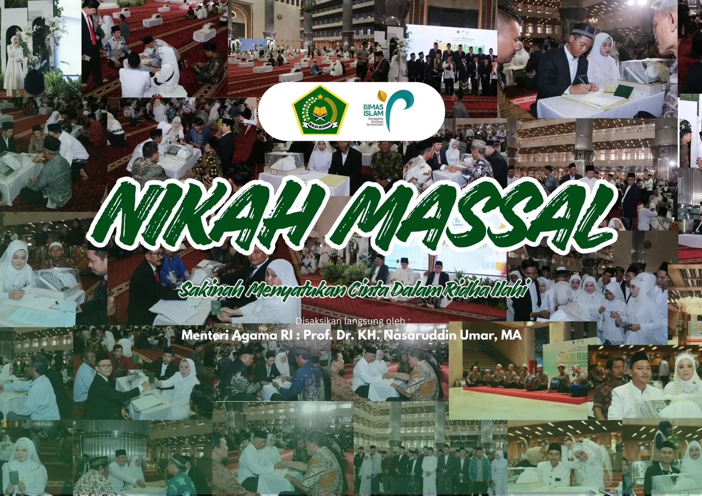

Acara yang tidak boleh meleset satu menit pun.
Rapat Pleno KPU. Pelantikan pengurus di UIN Jakarta. Nikah Massal bersama Kementerian Agama. Nikah Fest di Masjid Istiqlal. Tiga belas acara yang disorot publik, dan satu pernikahan keluarga yang hanya disaksikan orang terdekat — ditangani dengan ketelitian yang sama.
§ 01 Mandat
Acara kenegaraan tidak mengenal kesempatan kedua.
Terbiasa dengan protokol
Rapat pleno, pelantikan, dan agenda resmi dengan tamu VVIP, pengamanan, dan sorotan media. Urutan acara ditulis sampai satuan menit, lalu dilatih sebelum hari-H.
Satu penanggung jawab
Anda tidak dioper antar vendor. Satu nama yang Anda hubungi sejak rapat pertama sampai panggung dibongkar, dan nama itu yang menjawab bila ada yang bergeser.
Rencana cadangan, bukan harapan
Setiap segmen punya pengganti yang sudah disiapkan: pembicara terlambat, hujan, listrik, pengisi acara batal. Ketenangan Anda di hari-H berasal dari sini.
Anggaran yang dibuka
Rincian biaya diberikan tertulis setelah sesi Discover. Tidak ada pos yang muncul belakangan, dan Anda boleh mencoret bagian yang ingin Anda urus sendiri.
§ 02 Register Acara
Tiga belas acara yang sudah tercatat.
Dokumentasi lengkap tiap acara tersedia atas permintaan. Minta dokumentasi acara sejenis →
§ 03 Ruang Lingkup
Empat jenis acara yang paling sering kami pegang.
-
01
Pemerintahan & Lembaga
Rapat pleno & penetapanPelantikan & serah terimaKirab & upacara daerahKoordinasi pengamanan & perizinan -
02
Kampus, Alumni & Keagamaan
Wisuda & sumpah profesiReuni akbarPelantikan pengurusMTQ & acara keagamaanRegistrasi tamu massal -
03
Pernikahan & Acara Keluarga
Akad & resepsiNgunduh mantuNikah massal & nikah festDekorasi, katering & dokumentasiKoordinator hari-H -
04
Korporat, Launching & Sosial
Product launchCompany gatheringSeminar & konferensiBakti sosial & kegiatan massalPeliputan media
§ 04 Metode
Lima tahap, dan Anda tahu posisi kita di tahap mana.
Kejelasan adalah kunci ketenangan. Tiap tahap punya hasil yang bisa Anda pegang — bukan sekadar janji bahwa pekerjaan sedang berjalan.
- 1
Discover
Kami menyelami intensi dan visi Anda. Sesi awal ini tanpa biaya dan tanpa kewajiban melanjutkan.
- 2
Design
Konsep, strategi, dan anggaran disusun tertulis. Anda menyetujui atau mencoretnya sebelum apa pun dipesan.
- 3
Build
Vendor dikunci, perizinan diurus, rundown dikunci. Anda menerima kabar berkala tanpa harus menagih.
- 4
Execute
Hari-H. Tim kami yang berlari; Anda cukup hadir sebagai tuan rumah, bukan sebagai panitia.
- 5
Reflect
Dokumentasi diserahkan, catatan evaluasi ditulis, dan kenangannya dirapikan untuk arsip Anda.
§ 05 Keterangan Klien
Kawah tidak hanya menjadi EO, tapi menjadi partner yang benar-benar memahami kebutuhan emosional pernikahan kami. Mereka mengurus segalanya sampai kami bisa benar-benar menikmati hari itu tanpa stres sedikitpun.
Kawah mampu menerjemahkan bahasa engineer ke dalam acara yang engaging untuk client dan media. Media coverage melampaui ekspektasi 300%.
Acara 17-an keluarga besar kami yang biasanya kacau, kali ini berjalan seperti di hotel bintang 5. Anak-anak senang, orang tua tenang.

§ 06 Perihal Kawah
Di balik setiap permintaan, ada alasan yang jarang diucapkan.
Kami percaya setiap acara bukan sekadar rangkaian kegiatan, melainkan babak penting dalam cerita hidup Anda. Tugas kami menjembatani jarak antara imajinasi dan realisasi — antara harapan dan kenyataan.
Entah itu hari pertama dua hati bersatu, peluncuran produk yang dikerjakan bertahun-tahun, atau agenda resmi yang disaksikan satu kota. Yang kami urus bukan panggungnya, melainkan alasan orang berkumpul di depannya.
§ 07 Kontak
Mari bicara soal acara Anda.
Sebutkan tanggal, perkiraan jumlah tamu, dan lokasinya. Anda akan menerima gambaran konsep beserta kisaran anggarannya.
- Telepon · WA0821-2465-9780
- Surelkawahinsanpratama@gmail.com
- Instagram@kawah.organizer
- AlamatJl. Puri Serpong 1 Blk. AH5 No.9, RT.007/RW.005, Babakan, Kec. Setu, Kota Tangerang Selatan, Banten 15345
- 1 Anda kirim pesan
- 2 Kami balas hari itu juga
- 3 Sesi Discover, tanpa biaya
- 4 Konsep & anggaran tertulis
§ 08 Pertanyaan
01Berapa biaya menggunakan jasa Kawah?
Biaya menyesuaikan jenis acara, jumlah tamu, lokasi, dan cakupan pekerjaan. Setelah sesi Discover yang tanpa biaya, Anda menerima rincian anggaran tertulis — tanpa pos yang muncul belakangan.
02Berapa lama sebelum hari-H sebaiknya menghubungi?
Untuk acara lembaga dan pernikahan, idealnya satu sampai tiga bulan sebelumnya. Namun kami terbiasa menangani acara dengan waktu persiapan singkat — hubungi saja dulu, kami cek ketersediaan tim.
03Apakah melayani acara di luar Tangerang Selatan?
Ya. Register kami mencatat acara di Jakarta (UIN Syarif Hidayatullah, Masjid Istiqlal), Kota Tangerang, dan wilayah Banten lainnya.
04Apakah bisa hanya mengurus sebagian acara saja?
Bisa. Banyak klien memakai kami hanya sebagai koordinator hari-H, pengelola rundown, atau penanggung jawab dekorasi dan dokumentasi. Cakupannya kita sepakati di awal.
05Bagaimana cara memulai?
Kirim pesan WhatsApp ke 0821-2465-9780 dengan menyebut jenis acara, perkiraan tanggal, dan jumlah tamu. Kami jadwalkan sesi Discover tanpa biaya.